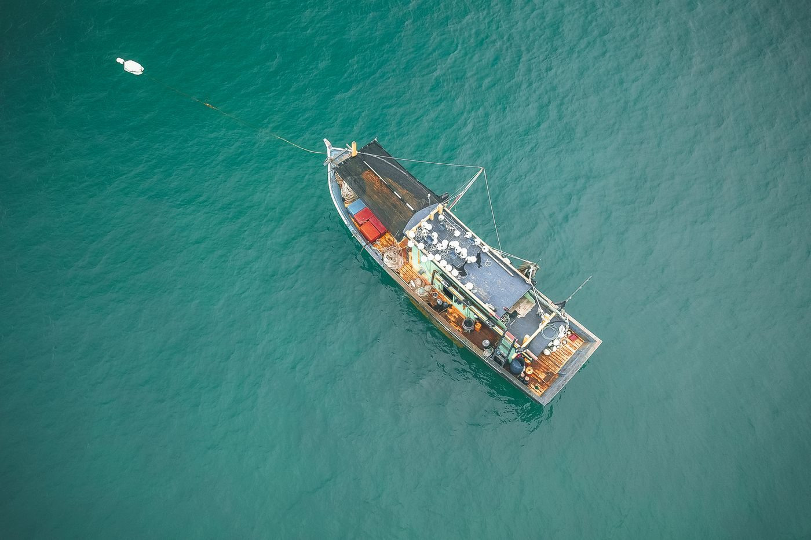
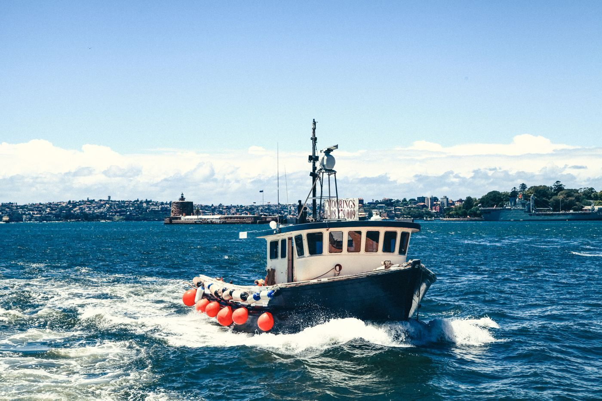
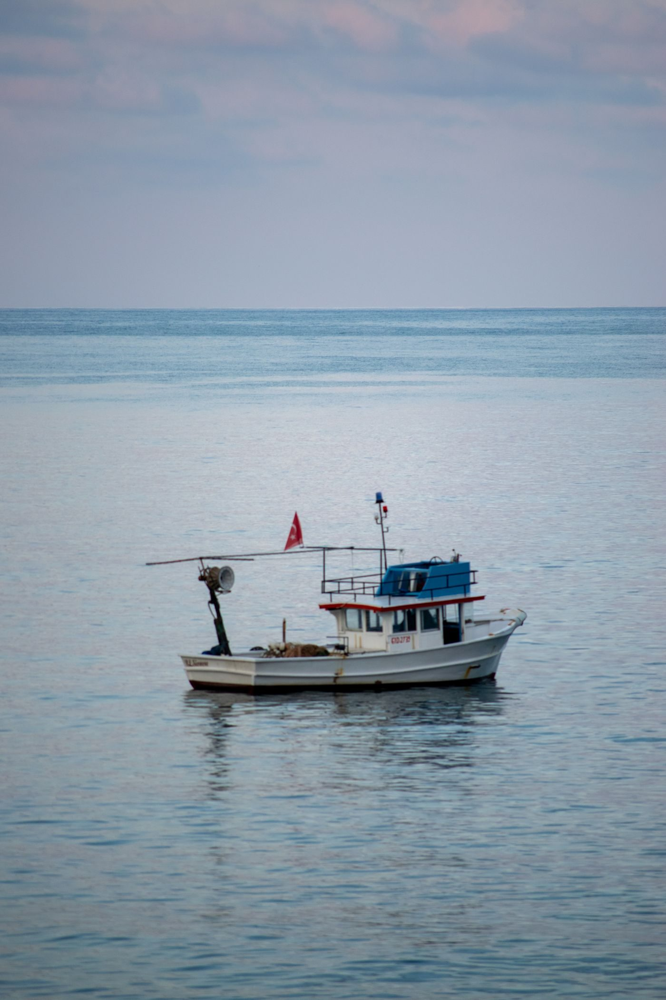

Galveston, Texas
Sportfishing charters from the Galveston Yacht Basin aboard SeaPlay III and SeaPlay IV, with all fishing tackle, rods, reels, and bait included, and a USCG-licensed Captain and Mate aboard.
SeaPlay Sportfishing runs sportfishing charters from the Galveston Yacht Basin, described in research as the closest marina to the fishing grounds. Its boats are SeaPlay III and SeaPlay IV: a 27 foot Key West center console for jetty trips and a 36 foot Contender for offshore trips. Trips are led by Capt. Brad and Capt. Pedro. Guests may bring food and drinks. Call or email to book.


715 N Holiday Dr, Galveston, TX 77550
Monday to Sunday 8:00 AM to 8:00 PM